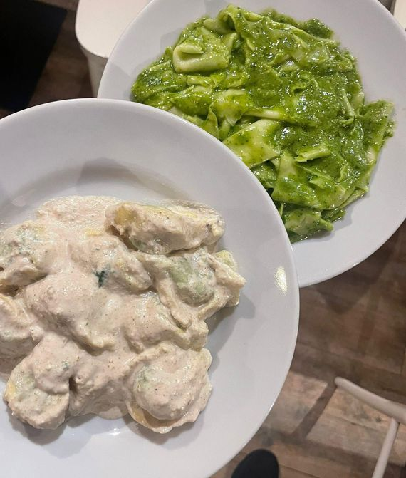
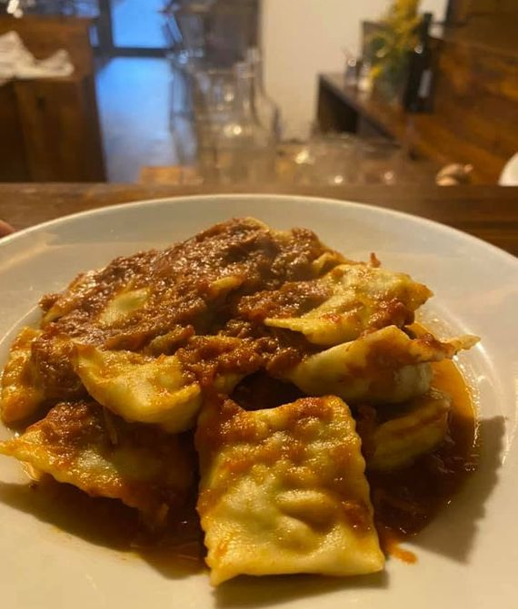
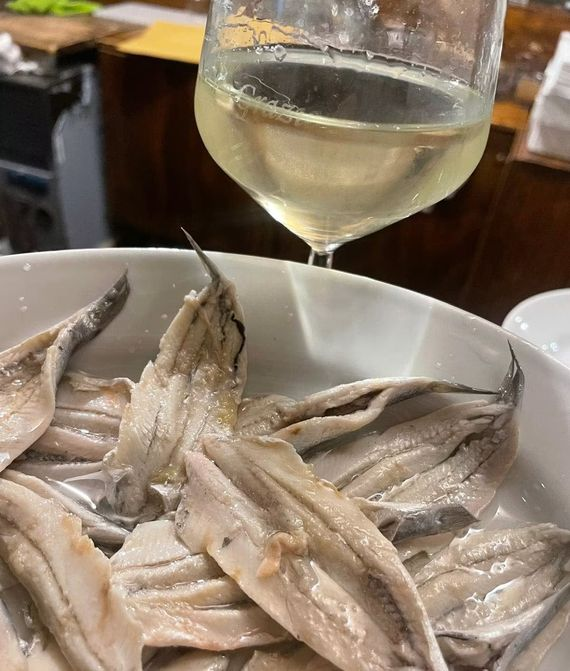
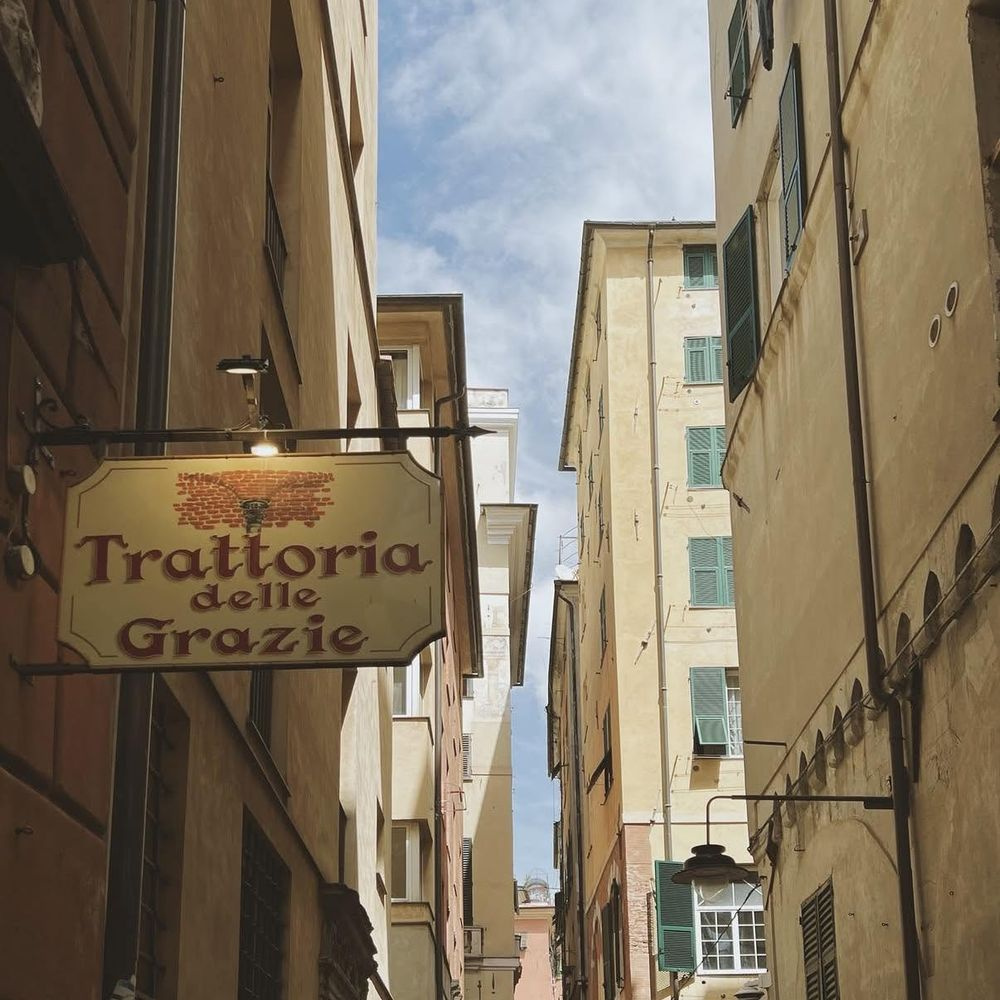
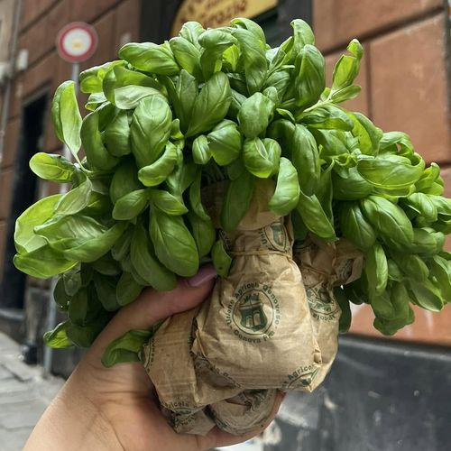

Pranzo, cena e vino
La nostra tavola
Due turni a pranzo e due a cena, sette giorni su sette tranne il mercoledì. E tra un turno e l'altro, un bicchiere al bancone della vineria.
-

Pranzo
12:30 · 14:00
-

Cena
19:30 · 21:30
-

Vineria
Al bancone


La nostra casa
Un palazzo patrizio tra i carruggi
Nel cuore del centro storico di Genova, a due passi dal Porto Antico, la Trattoria delle Grazie vive nell'atrio di un antico palazzo patrizio. Il restauro ne ha riportato alla luce il fascino originale: archi in mattoni, tavole semplici e una cucina che parla ligure. È il posto giusto per una cena romantica come per una serata vivace al grande bancone della vineria.


viaggiatori 2026

Il piatto della casa
Mandilli al pesto
"Fazzoletti" di pasta sottilissima con il nostro pesto genovese fatto in casa. Per molti dei nostri ospiti è uno dei migliori pesti di Genova: venite a giudicare voi.
Scopri il menù


Archi in mattoni antichi, pulizia impeccabile, porzioni abbondanti e sapori decisi. Servizio ottimo nonostante il pienone.
Illottatoredisugo · Genova
Recensione TripAdvisor · 5/5
Contatti
Prenotazioni
+39 010 869 8240Dove siamo
Via delle Grazie 48,16128 Genova
Pranzo
Tutti i giorni tranne il mercoledì
12:30 – 16:00
Cena
Tutti i giorni tranne il mercoledì
19:30 – 23:30
Perché sceglierci
Il nostro carattere
-

Scelta dei viaggiatori 2026
Premio TripAdvisor: 4,5/5 su oltre 1.200 recensioni.
-

Fatto in casa
Pasta, dolci, pane e focaccia: tutto di nostra produzione.
-

Per tutti i gusti
Opzioni vegetariane e alcuni piatti senza glutine.
-

Accessibile
Accesso per sedie a rotelle e seggioloni per i più piccoli.


Prima di venire
Da sapere
-
Due turni
Pranzo alle 12:30 o alle 14:00, cena alle 19:30 o alle 21:30.
-
Prenotazione
Siamo quasi sempre al completo: prenotate in anticipo.
-
Pagamenti & servizi
Visa, Mastercard e American Express. Wi-Fi gratuito.